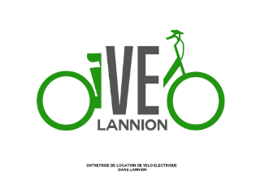

Entreprendre et gérer un projet - VéLannion
(MMI)
Ce projet consistait à entreprendre et à gérer un projet en lien avec les Objectifs du développement durable, à Lannion. Avec mon équipe nous nous sommes décidés sur un projet de vélos électriques à Lannion. Avec mon binôme, nous étions chargés du benchmarking et du questionnaire. Nous avons fait notre benchmarking sur la ville de Vannes et Rennes. Suite à cette étude documentaire nous avons créé notre questionnaire sur sphinx et étudié nos résultats pour mettre en place notre stratégie de communication.
Entreprendre et gérer un projet - VéLannion
Ce projet consistait à entreprendre et à gérer un projet en lien avec les Objectifs du développement durable, à Lannion. Avec mon équipe nous nous sommes décidés sur un projet de vélos électriques à Lannion. Avec mon binôme, nous étions chargés du benchmarking et du questionnaire. Nous avons fait notre benchmarking sur la ville de Vannes et Rennes. Suite à cette étude documentaire nous avons créé notre questionnaire sur sphinx et étudié nos résultats pour mettre en place notre stratégie de communication.